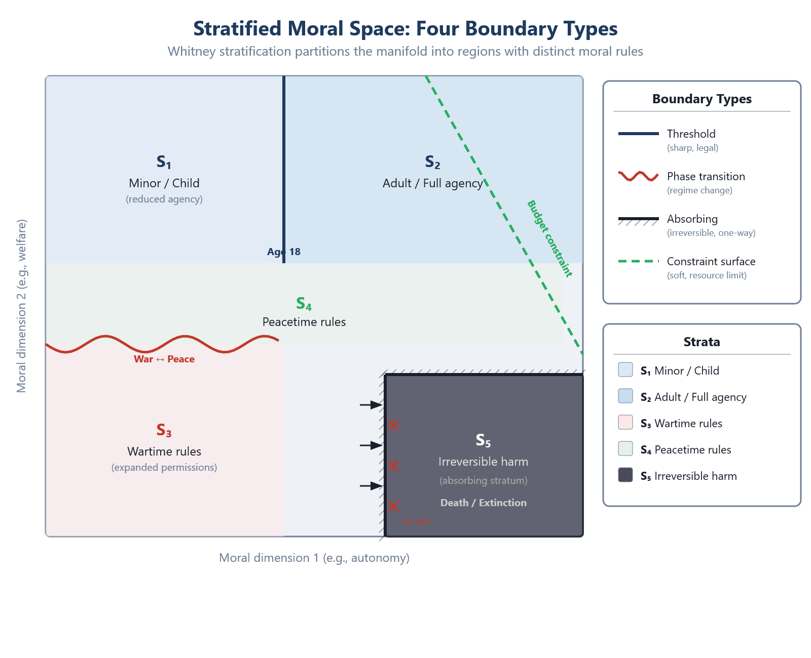
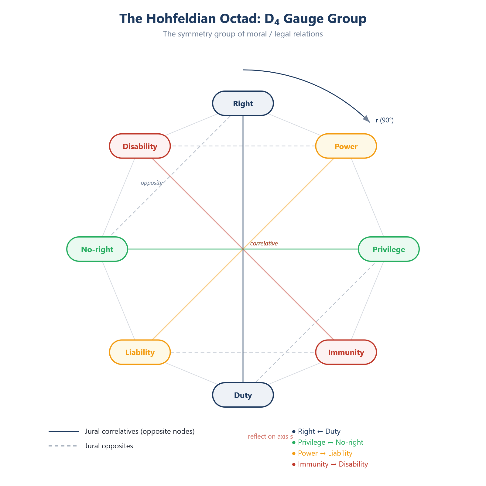

Chapter 8: Stratification — Boundaries, Thresholds, and Phase Transitions
RUNNING EXAMPLE — Priya’s Model
The 70-point threshold in TrialMatch is a first-type boundary: a threshold. Above 70, patients enter the ‘trial-eligible’ stratum where new rules apply—informed consent protocols, monitoring, experimental risk. Below 70, standard care. Priya identifies all four boundary types. Threshold: the 70-point cutoff. Phase transition: when BEACON-7 moves from Phase II to Phase III, eligibility criteria change discontinuously. Absorbing stratum: patient death—once crossed, the harm of non-matching is irreversible. Constraint surface: HealthBridge’s budget for patient travel support, a soft boundary that limits but does not forbid. The 70-point threshold is ethically arbitrary. The absorbing boundary of death is not.
8.1 The Patchwork Structure of Moral Space
The preceding chapters have developed the smooth geometry of the moral manifold: tangent spaces, tensor fields, metrics, contractions. This apparatus is powerful within any single moral regime — any region of moral space where smooth trade-offs apply and the rules are uniform. But moral space is not uniformly smooth. It is a patchwork: regions of smooth evaluation joined along boundaries where the rules change discontinuously.

The difference between a difficult trade-off and a hard prohibition is not a matter of degree. It is a difference in kind — a boundary between two moral regimes, each internally coherent, governed by different rules. Crossing such a boundary changes the operative framework: what was permissible becomes forbidden, what was optional becomes mandatory, what was a matter of degree becomes a matter of category.
8.2 Whitney Stratification: The Mathematical Framework
From Manifolds to Stratified Spaces
A smooth manifold is a space that is everywhere locally Euclidean, with the same dimension at every point. This is too rigid for moral space. Moral space contains:
Regions of full dimensionality (nine-dimensional in the generic case of Chapter 5) where all moral dimensions are independently variable
Lower-dimensional boundaries where some degrees of freedom are constrained or eliminated
Singular points where the geometric structure breaks down entirely
A stratified space relaxes the uniformity requirement while preserving enough structure for differential calculus to work on each stratum and for the strata to fit together coherently.
Formal Definition
Definition 8.1 (Stratification). A stratification of a topological space X is a locally finite partition {Sα}α∈A into smooth manifolds (called strata) of various dimensions, together with a partial order ≼ on the index set A, satisfying:
Frontier condition: Sα∩Sβ≠⌀ implies Sα⊂Sβ and α≼β.
Local finiteness: Each point of X has a neighborhood that meets only finitely many strata.
The frontier condition ensures a clean nesting: if a stratum touches the closure of a higher-dimensional stratum, it lies entirely in that closure. There are no “dangling” pieces.
Whitney’s Conditions
Hassler Whitney (1965) introduced regularity conditions that ensure the strata fit together in a geometrically well-behaved way. These conditions prevent pathological configurations — strata that spiral toward each other, or boundaries where tangent planes are undefined.
Definition 8.2 (Whitney Condition A). Let Sα and Sβ be strata with Sα⊂Sβ. Whitney condition (A) holds at a point x∈Sα if: for every sequence {yn}⊂Sβ converging to x, if the sequence of tangent spaces TynSβ converges to a limit τ, then TxSα⊂τ.
In words: as you approach a lower stratum from a higher one, the tangent planes of the higher stratum must contain, in the limit, the tangent plane of the lower stratum. The boundary stratum’s tangent directions are a subset of the limiting tangent directions of the ambient stratum.
Definition 8.3 (Whitney Condition B). With notation as above, if additionally {xn}⊂Sα is a sequence converging to x, and the secant lines xnyn converge to a line l, then l⊂τ.
Condition (B) is stronger: not only must tangent planes be well-behaved, but the “angle of approach” from the higher stratum to the lower stratum must also be consistent. Together, conditions (A) and (B) guarantee that the stratified space admits tubular neighborhoods, normal bundles, and controlled deformation — the essential tools for doing geometry near boundaries.
Moral Interpretation
Why do these technical conditions matter for ethics?
Because they ensure that moral evaluations near a boundary are well-behaved. If Whitney’s conditions fail, small perturbations near a boundary can produce wild oscillations in moral evaluation — a situation with no ethical analogue. Real moral boundaries are sharp but approachable: as a situation moves toward the consent threshold, the moral evaluation changes smoothly right up to the boundary, where it jumps. The jump is discontinuous, but the approach is controlled. This is precisely what Whitney’s conditions guarantee.
Example. Consider the boundary between “sufficient informed consent” and “insufficient informed consent” in medical ethics. On the high-dimensional stratum (sufficient consent), smooth trade-offs apply: the physician may weigh benefit against risk, timeliness against thoroughness of disclosure. On the boundary (consent just barely sufficient), these trade-offs still apply but become more constrained. Below the boundary (insufficient consent), the procedure is impermissible — the satisfaction function jumps to -∞.
Whitney condition (A) ensures that the directions of smooth variation available just above the boundary include the directions available on the boundary itself. Condition (B) ensures that the geometry of the approach — whether you approach the boundary from the “more information” side or the “more understanding” side — is consistent.
8.3 A Taxonomy of Moral Boundaries

Figure 7 | Stratified Moral Space: Four Boundary Types
Not all stratum boundaries are alike. This section develops a taxonomy of the boundary types that appear in moral space.
Type I: Thresholds
A threshold is a codimension-1 boundary where a continuous parameter crosses a critical value, producing a discrete change in moral status.
Definition 8.4 (Threshold Boundary). A threshold boundary is a hypersurface B⊂M such that: 1. On each side of B, the satisfaction function S and the metric gμν are smooth. 2. Across B, either S or gμν (or both) may be discontinuous. 3. B is the level set of a smooth function ϕ:M→R, with B=ϕ-1(0).
Condition (3) ensures the boundary is “smooth as a surface” even though the moral evaluation jumps across it. The threshold function ϕ measures distance from the boundary; the sign of ϕ determines which regime applies.
Examples of threshold boundaries:
| Threshold | Variable | Below | Above |
|---|---|---|---|
| Age of majority | Age | Minor (restricted autonomy) | Adult (full autonomy) |
| Informed consent | Understanding | Impermissible treatment | Permissible treatment |
| Poverty line | Income | Entitled to assistance | Not entitled |
| Lethality | Harm severity | Battery (civil wrong) | Homicide (criminal offense) |
| Capacity | Cognitive function | Guardian required | Self-determination |
Each threshold corresponds to a stratum boundary where the applicable moral rules change. On each side, smooth variation is possible (the 17-year-old has more autonomy than the 12-year-old; the 19-year-old has more than the 18-year-old). But at the boundary, the category changes, and with it the set of applicable rules.
Type II: Phase Transitions
A phase transition is a boundary where the structure of the moral evaluation changes — not just its value, but the operative metric, the dimensionality of the effective space, or the nature of the permissible trade-offs.
Definition 8.5 (Phase Transition Boundary). A phase transition boundary is a stratum boundary across which the moral metric gμν changes discontinuously in rank or signature.
Phase transitions are more dramatic than simple thresholds. At a threshold, the same moral framework applies on both sides, with different conclusions. At a phase transition, the framework itself changes: different dimensions become relevant, different trade-offs become available, the very character of moral deliberation shifts.
Example: The Emergency Phase Transition. In Chapter 7 (§Level 5), we saw that a medical emergency transforms the allocation metric:
gμνroutine→gμνemergency
In routine mode, the metric allows smooth trade-offs among benefit, wait-time, fairness, and other dimensions. In emergency mode, the welfare/urgency dimension acquires lexicographic priority: g11→∞ (or equivalently, the metric becomes degenerate on the non-urgency subspace). This is not a change in the value of S — it is a change in the geometry of the space on which S is defined.
Example: The Wartime Phase Transition. In the parable of Chapter 2, the declaration of war is a phase transition. Before the declaration, the moral evaluation of the son’s broken leg is determined by the peacetime metric (health, capability, work). After the declaration, the wartime metric gives decisive weight to the conscription/survival dimension, which was previously inactive. The effective dimensionality of the moral space increases: a dimension that was locally constant (no war) becomes variable and dominant.
Classification. Borrowing from statistical physics, we can distinguish:
First-order phase transitions: The satisfaction function S is discontinuous across the boundary. The “moral energy” jumps. Example: the consent threshold — below it, S=-∞; above it, S takes a finite value.
Second-order phase transitions: S is continuous across the boundary but its derivatives (the gradient ∇S, the curvature) are discontinuous. The evaluation does not jump, but its sensitivity changes sharply. Example: crossing from a context where promise-keeping is a minor consideration to one where it is central — the value S may change continuously, but ∂S/∂x2 (sensitivity to the duty dimension) jumps.
Type III: Absorbing Strata (Nullifiers)
An absorbing stratum is a lower-dimensional region that, once entered, determines the moral evaluation regardless of the original context. Entry is irreversible in the sense that the original stratum’s rules cease to apply.
Definition 8.6 (Absorbing Stratum). A stratum S0⊂M is absorbing if there exists a tubular neighborhood N of S0 and a continuous retraction r:N→S0 such that, for any moral evaluation function S compatible with the stratification, S|N factors through r:
S(p)=S(r(p)) for all p∈N
In words: near an absorbing stratum, the evaluation depends only on the projection onto S0 , not on the transverse coordinates.
Absorbing strata are the geometric formalization of nullifiers — conditions that override all other moral considerations. The most important empirical finding about nullifiers comes from analysis of the Dear Abby corpus (Chapter 17), which identifies three universal nullifiers across all domain contexts:
| Nullifier | Corpus Count | Cross-Domain | Mechanism |
|---|---|---|---|
| Abuse | n = 582 | Universal | Collapses obligation structure |
| Danger | n = 218 | Universal | Activates self-preservation override |
| Impossibility | n = 144 | Universal | Ought implies can: removes infeasible obligations |
When abuse is present, it does not reduce the weight of other obligations — it annuls them. The obligation to maintain a family relationship, to fulfill a promise, to support a colleague — all these obligations, which may be strong in the non-abusive stratum, collapse to zero (or reverse into obligations to exit) when the situation enters the abuse stratum. This is not a smooth re-weighting; it is a stratum transition.
The absorption property is important: once in the abuse stratum, the evaluation is determined by the stratum’s own rules. The transverse coordinates — how strong the promise was, how much the relationship previously meant, how inconvenient departure would be — cease to matter. This is the mathematical content of the moral intuition that “nothing justifies staying in an abusive relationship.”
Type IV: Constraint Surfaces (Forbidden Regions)
A constraint surface marks the boundary of the forbidden region — the set of moral states that are absolutely impermissible.
Definition 8.7 (Constraint Surface). The constraint set C⊂M is a closed subset. The constraint surface ∂C is the boundary of C in M. The satisfaction function satisfies S|C=-∞.
The constraint set represents moral non-starters: options that are forbidden regardless of consequences, regardless of other considerations, regardless of the metric. In the language of deontological ethics, these are side constraints — not trade-off-able values but hard limits.
The constraint surface ∂C is a stratum boundary of a specific kind: on one side, finite-valued evaluation with smooth trade-offs; on the other, S=-∞ with no trade-offs possible. The gradient ∇S does not merely become large near ∂C — it becomes formally infinite, creating a potential wall that no finite benefit can overcome.
Relation to Nussbaum’s thresholds. Martha Nussbaum’s capability thresholds (Chapter 3) are constraint surfaces: below the minimum level of each capability, a life is not fully human, and the imperative is to raise capabilities to the threshold. The geometric framework generalizes Nussbaum’s insight by representing thresholds as stratum boundaries with specific mathematical properties (absorption, discontinuity of S, degeneracy of g).
8.4 Semantic Gates: The Transition Functions
From Stratum to Stratum
The boundaries described in §8.3 are where the rules change. Semantic gates are how and why: the specific features of a situation that trigger a stratum transition.
Definition 8.8 (Semantic Gate). A semantic gate is a map G:F×Sα→Sβ where F is a space of triggering features, Sα is the source stratum, and Sβ is the target stratum. The gate fires when a feature f∈F is present, transitioning the moral evaluation from the rules of Sα to the rules of Sβ .
Formal trigger condition. The informal phrase “the gate fires when a feature f is present” is shorthand for: the gate is activated when the triggering feature f ∈ F satisfies the gate’s activation predicate σ(f) = 1, where σ: F → {0, 1} is the gate’s characteristic function. The domain F of triggering features is a measurable subset of the space of morally relevant linguistic and situational cues at the stratum boundary. The gate map G is defined on the activated domain F¹ = σ⁻¹(1) × S_α, not on all of F × S_α.
The term “semantic gate” is chosen deliberately, by analogy with logic gates in digital circuits. A logic gate takes binary inputs and produces a binary output; a semantic gate takes a moral feature and produces a discrete state transition. The key property is discreteness: the transition is all-or-nothing, a step function, not a smooth sigmoid.
Empirical Evidence for Discreteness
The claim that semantic gates are discrete is empirical, not stipulative. It is confirmed by analysis of the Dear Abby corpus and by the BIP (Bond Invariance Principle) experiments across 109,294 passages in 11 languages (Chapter 17).
Gate detection results from the Dear Abby corpus:
| Trigger Phrase | Transition | Effectiveness | Character |
|---|---|---|---|
| “You promised” | Liberty → Obligation | 94% | Step function |
| “Only if convenient” | Obligation → Liberty | 89% | Step function |
| “He hit you” / abuse signal | Any → Nullified | 97% | Step function |
| “Life-threatening” | Routine → Emergency | 92% | Step function |
| “You agreed to” | Liberty → Obligation | 91% | Step function |
The “effectiveness” column measures how reliably the trigger phrase causes the state transition in natural moral reasoning. The “character” column reports the empirical finding that these transitions behave as step functions — binary switches — rather than smooth transitions. There is no “50% obligated” intermediate state. One is either in the obligation stratum or the liberty stratum; the gate flips the state discretely.
Cross-linguistic evidence. The BIP experiments reveal that the deontic axis — the obligation/permission distinction — transfers across languages at 100% accuracy even when other aspects of moral content fail to transfer. This suggests that the stratum structure of moral space (the partition into obligation and liberty regions) is more universal than the metric (how considerations are weighted within each stratum). The boundaries are structural invariants; the smooth interior varies with culture and context.
The D₄ Group Structure of Hohfeldian Transitions
The transitions between Hohfeldian jural states — Obligation (O), Claim (C), Liberty (L), No-claim (N) — have a precise algebraic structure: they form the dihedral group D4 of order 8, the symmetry group of the square.
The Hohfeldian Square:

O ———— C | | | | L ———— N
The eight elements of D4 are:
| Element | Operation | Moral Meaning |
|---|---|---|
| e | Identity | No change |
| r | ° rotation | O → C → N → L → O |
| r² | ° rotation | O ↔ N, C ↔ L (full inversion) |
| r³ | ° rotation | O → L → N → C → O |
| s | Vertical reflection | O ↔ C, L ↔ N (correlative swap) |
| sr | Diagonal reflection | C ↔ L; O, N fixed |
| sr² | Horizontal reflection | O ↔ L, C ↔ N (jural swap) |
| sr³ | Anti-diagonal reflection | O ↔ N; C, L fixed |
The group relations are r4=e, s2=e, and srs=r-1. These are verified by the test suite of the Dear Ethicist experimental platform, which confirms the axioms hold exactly for moral state transitions.
The Correlative Reflection. The most important group element is the reflection s, which swaps correlatives: O ↔ C and L ↔ N. The correlative symmetry principle states that Hohfeldian positions come in linked pairs:
If Alice has an obligation to Bob, then Bob has a claim against Alice.
If Alice is at liberty regarding Bob, then Bob has no claim against Alice.
Empirically, this symmetry holds at high rates:
O↔C: 87% L↔N: 82%
The deviation from 100% is informative: it measures the rate at which natural moral reasoning violates structural constraints. The violations are not random; they concentrate in specific situations (e.g., where asymmetric power relations distort the perceived correlative structure).
Why D4? The fact that Hohfeldian transitions form the symmetry group of the square is not an accident. It reflects a deep structural feature: the moral positions are related by two independent binary oppositions — the correlative opposition (O ↔ C, L ↔ N) and the jural opposition (O ↔ L, C ↔ N) — and these two oppositions generate a group isomorphic to D4. The square is the simplest figure with exactly two independent reflection symmetries.
Semantic gates as group elements. Each semantic gate corresponds to a specific element of D4:
“You promised” corresponds to the transition L → O, which is the rotation r (since r maps L → O). r3
“Only if convenient” corresponds to O → L, which is the rotation r³ (the inverse of r). r
The correlative constraint (O implies C for the other party) corresponds to the reflection s.
The gate structure is thus algebraic: gates compose according to the group multiplication table of D₄. Two D4 successive L → O transitions compose to r² (which r3⋅r3=r2 maps L → C — a double promise creates a claim, not merely an obligation). This compositional structure is testable and opens a path toward formal verification of moral reasoning systems.
Generator asymmetry. [Empirical result (preliminary).] The two generators of D₄ have fundamentally different operational characters:
The gate structure is thus algebraic: gates compose according to the group multiplication table of D₄. Two D4 successive L → O transitions compose to r² (which r3⋅r3=r2 maps L → C — a double promise creates a claim, not merely an obligation). This compositional structure is testable and opens a path toward formal verification of moral reasoning systems.
Rotation r (state transition, O → C → N → L → O) is discrete and gated. It requires specific linguistic triggers (“You promised,” “Only if convenient,” “He hit you”) to fire, and the effectiveness is probabilistic (89–97%; see §8.4 gate detection results).
This asymmetry has a structural explanation: s corresponds to viewing the same relationship from the other side—a change of frame, not a change of state. The rotation r corresponds to changing the moral state itself, which requires an event (a promise, a release, an escalation) to occur. The distinction is analogous to the difference between a passive coordinate transformation (always free) and an active physical transformation (requires energy or a force). See §12.3 for the full gauge group identification.
Computational instantiation (February 2026). The DEME V3 reference implementation includes a D₄ Hohfeldian gauge structure demonstration (hohfeld_d4_demo.py) that exercises the full algebraic structure described in this section. The demo implements semantic gates as D₄ group elements: “only if convenient” applies the negation r² (mapping O → L), “I promise” applies the rotation r (mapping L → O), and “from their perspective” applies the reflection s (the correlative swap O ↔ C, L ↔ N). The compositional structure is verified computationally: applying two semantic gates in sequence produces the result predicted by D₄ group multiplication, confirming that gate composition follows the group law. The generator asymmetry — reflection s as free perspective swap vs. rotation r as gated state transition — is operationalized in the apply_semantic_gate() function, which maps linguistic triggers to their corresponding D₄ elements.
8.5 The Geometry Near a Boundary
Normal Bundles and Transverse Structure
At a stratum boundary, we can decompose the local geometry into tangential and transverse components. The tangential directions lie along the boundary; the transverse directions cross it.
Let B⊂M be a codimension-1 stratum boundary, and let p∈B. The tangent space TpM decomposes as:
TpM=TpB⊕NpB
where TpB is the tangent space to the boundary and NpB is the normal bundle — the one-dimensional subspace perpendicular to the boundary.
Moral interpretation. The tangential directions are the directions of variation that do not cross the boundary — changes that keep you in the same moral regime. The normal direction is the direction that crosses the boundary — the direction of regime change.
Example. At the consent threshold, the tangential directions include variations in the degree of information provided (more or less detail, different formats) that keep consent above the threshold. The normal direction is the direction that moves consent below the threshold — from sufficient to insufficient.
The Jump Discontinuity
At a Type I boundary (threshold), the satisfaction function has a well-defined jump:
ΔS(p)=limε→0+S(p+εn)-limε→0+S(p-εn)
where n is the unit normal to B at p. The jump ΔS measures the moral significance of crossing the boundary at the point p.
Properties of the jump:
ΔS may vary along the boundary. The moral significance of crossing the consent threshold may be greater for a high-risk procedure than a low-risk one.
ΔS may be finite (for ordinary thresholds) or infinite (for constraint surfaces, where S→-∞ on one side).
The direction of the jump is always normal to the boundary — tangential motion does not produce discontinuity.
Penumbral Zones
In practice, moral boundaries are not always sharply defined. There may be a penumbral zone — a narrow region around the boundary where the stratum membership is uncertain or contested.
Definition 8.9 (Penumbral Zone). A penumbral zone around a boundary B is a tubular neighborhood Nε(B)={p∈M:d(p,B)<ε} within which the applicable stratum is uncertain.
Precision note. The term “uncertain” in Definition 8.9 is not epistemic (it does not refer to the evaluator’s lack of knowledge) but measurement-theoretic: within the penumbral zone, the projection π: N → {S_α, S_β} that assigns each point to a governing stratum is not uniquely determined by the metric structure alone. The width of the penumbral zone is a geometric property of the boundary (its curvature and the angle of approach), not a property of the observer.
The existence of penumbral zones does not contradict the discreteness of the boundary. The boundary itself is sharp — the stratum structure is well-defined at every point. What may be uncertain is where the boundary is located in a particular case. The penumbral zone represents epistemic uncertainty about the location of a sharp boundary, not metaphysical fuzziness in the boundary itself.
Legal analogy. The age of majority is precisely 18 (in most jurisdictions). There is no “penumbral zone” around 18 — you are either a minor or an adult. But whether a particular individual has capacity to consent (a different boundary) may be uncertain near the threshold, not because the threshold is fuzzy, but because the individual’s capacity is difficult to measure precisely.
8.6 Singularities: Where the Geometry Breaks Down
Moral Singularities Revisited
Chapter 5 (§5.7) introduced moral singularities as points where the geometric structure fails: the metric degenerates, the gradient is undefined, or constraint surfaces intersect in a way that eliminates all permissible options. This section develops the theory in detail.
Classification of Singularities
Type 1: Metric Degeneracy.
At a metrically degenerate point p, the metric tensor gμν(p) has det(gp)=0. Some directions in moral space have zero “weight” — comparisons along those directions are undefined.
Moral content. Metric degeneracy represents incommensurability: at the singular point, two or more moral dimensions cannot be compared. The trade-off rate between them is undefined — not because we lack information, but because no legitimate exchange rate exists.
Example. In Sophie’s Choice (the forced choice between the lives of two children), the metric between “save child A” and “save child B” is degenerate. There is no exchange rate. The lives are not comparable in the way that, say, years of waiting time and medical benefit are comparable. The singularity is not epistemic (we don’t know the exchange rate); it is structural (no exchange rate exists).
Formal characterization. At a metrically degenerate point, the metric has a non-trivial null space:
Null(gp)={v∈TpM:gμνvμwν=0 for all w}
The dimension of the null space measures the degree of degeneracy. If dim(Null(gp))=k, then k dimensions of moral space have become incommensurable with the others.
Type 2: Gradient Failure.
At a gradient-singular point p, the satisfaction function S is not differentiable: ∇S is undefined. There is no well-defined “direction of moral improvement.”
Moral content. Gradient failure represents a genuine dilemma in the strongest sense: not a difficult choice (where ∇S exists but is small), but a point where the very concept of “moral improvement” is ill-defined.
Example. A physician has promised confidentiality to a patient who reveals an intent to harm a third party. The obligation of confidentiality and the obligation to prevent harm are both operative, point in opposite directions, and neither can be subordinated to the other. The satisfaction function S has a cusp or corner at this point — differentiable from neither direction.
Formal characterization. At a gradient-singular point, S may have: - A cusp: S approaches different limiting slopes from different directions. The subdifferential ∂S(p) is a non-singleton set. - A cone point: S is Lipschitz but not differentiable, with a cone of subgradients. - A branch point: Multiple sheets of S meet at p, with different gradients on each sheet.
Type 3: Constraint Intersection.
At a constraint intersection, multiple constraint surfaces meet, and their intersection may leave no permissible options.
Moral content. This is the “tragic dilemma” — a situation where every available option violates at least one absolute constraint. No permissible action exists.
Formal characterization. Let {Ci}i=1k be constraint sets with ⋂iCi⊃{p} but with the feasible cone at p having empty interior:
int(⋂iTp(M∖Ci))=⌀
Every direction from p leads into some constraint set. There is no permissible direction.
Example. An autonomous vehicle faces an unavoidable collision. Path A leads to a pedestrian; path B leads to a wall (harming the passenger); path C leads to a cyclist. Every option violates a constraint (do not harm innocents). The feasible cone is empty.
The Moral Content of Singularities
Singularities are not pathologies. They are information. A singularity tells us:
That a genuine dilemma exists (not merely a difficult choice)
Why it is a dilemma (which constraints or values conflict)
What type of dilemma it is (metric degeneracy, gradient failure, or constraint intersection)
What residue any resolution will leave (Chapter 15)
Different types of singularity call for different responses:
| Singularity Type | Diagnosis | Appropriate Response |
|---|---|---|
| Metric degeneracy | Values are incommensurable | Refuse to rank; acknowledge the loss inherent in any choice |
| Gradient failure | Obligations conflict without resolution | Exercise judgment; accept moral residue |
| Constraint intersection | No permissible option exists | Choose the least impermissible; reform the constraints |
A framework that cannot represent singularities — that always delivers an answer — is not more powerful than one that can. It is less honest. It conceals the structural source of genuine moral difficulty behind a false determinacy.
8.7 Phase Transitions in Moral Reasoning
The Physics Analogy
In statistical physics, a phase transition occurs when a continuous change in a control parameter (temperature, pressure) produces a discontinuous change in the system’s macroscopic properties (density, magnetization, symmetry). Water at 99°C is liquid; at 101°C (at standard pressure), it is steam. The molecules are the same; the collective behavior is qualitatively different.
Moral phase transitions have the same structure. A continuous change in a moral parameter — the severity of harm, the strength of a promise, the urgency of need — can produce a discontinuous change in the applicable moral framework.
Formal Development
Let λ be a continuous control parameter (a coordinate on M) and let S(λ) be the satisfaction function along a path parameterized by λ.
Definition 8.10 (Moral Phase Transition). A moral phase transition occurs at λ=λ* if:
(First-order) S is discontinuous at λ* : limλ→λ*-S(λ)≠limλ→λ*+S(λ) .
(Second-order) S is continuous but ∇S is discontinuous at λ* .
(Higher-order) S and ∇S are continuous, but the metric gμν or its derivatives are discontinuous at λ* .
Examples
First-order: The consent boundary. Below the consent threshold, medical treatment is battery ( S=-∞). Above it, treatment may have positive expected value. The jump in S is infinite — a first-order transition of the strongest kind.
Second-order: The promise strengthener. Consider a spectrum of commitment from casual mention (“I might come”) through conditional promise (“I’ll come if I can”) to unconditional promise (“I promise I’ll be there”). The satisfaction function S may vary continuously — each step increases the obligation’s weight smoothly. But at the point of explicit promise, the gradient changes sharply: ∂S/∂x2 (sensitivity to the duty dimension) jumps, because the obligation crystallizes from a matter of courtesy to a matter of fidelity. The Dear Abby data confirms this: “you promised” is a step-function gate, not a smooth ramp.
Higher-order: Contextual metric shift. Crossing from a family context to a workplace context may leave S and ∇S continuous (the same action receives approximately the same evaluation), but change the metric: the off-diagonal components g27 (coupling between rights and care) differ between family and workplace. This is a higher-order phase transition — the trade-off structure changes, even though the point evaluation does not.
Critical Phenomena
Near a phase transition, the system exhibits critical phenomena — enhanced sensitivity to small perturbations. In physics, this is critical opalescence, divergent correlation lengths, and power-law fluctuations. In moral reasoning, the analogues are:
Enhanced moral anxiety. Near a moral phase transition (close to the consent threshold, near the breaking point of a promise), agents experience heightened moral concern — a sensitivity to small details that would be irrelevant far from the boundary.
Amplified disagreement. Near a boundary, small differences in moral perception can produce large differences in moral conclusion. Two agents who agree about situations far from the boundary may disagree sharply about situations near it.
Slow moral deliberation. Decision-making slows near phase transitions, as the agent “oscillates” between the two regimes. This is the moral analogue of critical slowing down in physics.
These phenomena are empirically observable and provide indirect evidence for the stratified structure of moral space.
Phase Transitions as Symmetry Restoration
In physics, a disordered high-temperature phase has more symmetry than the ordered low-temperature phase: the random orientations of a paramagnet are rotationally symmetric, while the aligned spins of a ferromagnet break that symmetry. The same principle applies to moral phase transitions.
At high normative uncertainty (“high moral temperature”), the O/L/C/N distinction loses meaning—not because the states blur, but because the symmetry is restored. All Hohfeldian states become equivalent, and the D₄ action becomes trivial. This suggests three regimes:
1. Fully Ordered. All semantic gates function reliably. Normal moral reasoning operates within well-defined Hohfeldian states.
2. Partially Ordered. Low-dimensional stratum boundaries (near decision points) have “melted” while high-dimensional boundaries (in deliberation space) remain intact. This is the regime of moral triage—abstract principles remain articulable, but concrete applications become ambiguous.
3. Fully Disordered. All boundaries transparent. Complete normative chaos. The stratified structure predicts that this dissolution propagates from decision points outward, not uniformly.
8.8 Stratification and Moral Dynamics
Paths Crossing Boundaries
Chapter 10 will develop the full theory of moral dynamics — parallel transport, covariant derivatives, curvature. Here we note the complications that stratification introduces.
A path γ:[0,1]→M may cross stratum boundaries. At each crossing, the applicable rules change, and the tensors being transported must be translated from one stratum’s framework to the other’s.
Definition 8.11 (Boundary Crossing Data). At a stratum boundary B between strata Sα and Sβ , the boundary crossing data consists of: 1. A transition map Tαβ:T(Sα)|B→T(Sβ)|B specifying how tensors on Sα relate to tensors on Sβ at the boundary. 2. A jump function ΔS:B→R∪{-∞} specifying the discontinuity in the satisfaction function. 3. A gate condition G:B→{0,1} specifying whether the transition fires at each point of the boundary.
The transition map Tαβ is the moral analogue of the connection in gauge theory — it specifies how to compare moral objects across a change of regime. In general, Tαβ is not the identity: an obligation on one side of the boundary need not correspond to the “same” obligation on the other side.
Example. An obligation to keep a secret (in the confidentiality stratum) becomes, upon learning the secret involves harm to a third party, an obligation to disclose (in the duty-to-warn stratum). The transition map T reverses the direction of the obligation vector along the disclosure dimension.
Convention 8.1 (Differential-Geometric Operations at Stratum Boundaries). Throughout this work, differential-geometric operations (geodesics, parallel transport, curvature, covariant derivatives) are defined within the interior of each stratum, where the metric and connection are smooth. At stratum boundaries, the following conventions apply:
- Piecewise geodesics. A path crossing from stratum S_α to S_β follows the geodesic equation in S_α up to the boundary, then follows the geodesic equation in S_β with initial conditions given by the boundary crossing data (Definition 8.11). The transition map T_{αβ} translates terminal velocity in S_α into initial velocity in S_β. The resulting path is continuous and piecewise smooth.
- Parallel transport across boundaries. A tensor transported to the boundary in S_α’s connection is mapped by T_{αβ} at the crossing point and then transported onward in S_β’s connection. The holonomy of a closed path (Chapter 10) thus receives contributions from both the smooth curvature within each stratum and the transition maps at boundary crossings — analogous to the Aharonov–Bohm effect, where curvature vanishes along the path but holonomy is nonzero due to the topological structure of the connection.
- Curvature and variational quantities. The Riemann curvature tensor (Definition 4.5), the Lagrangian L (Definition 12.1), and all variational quantities are C² within each stratum. At absorbing boundaries (Definition 8.6), V → ∞ ensures that extremal paths cannot cross; at non-absorbing boundaries, junction conditions (matching position and momentum across the boundary) determine the unique piecewise-smooth continuation. These conventions ensure that the integral quantities of later chapters — the moral action (§12.4), the parallel transport equation (§10.4), and the holonomy computation (§10.5) — are well-defined for paths that cross stratum boundaries.
The Holonomy of Moral Circuits
If a path γ crosses boundaries and returns to its starting stratum, the tensor it carries may have changed. This is holonomy — the failure of a tensor to return to its original value after parallel transport around a closed loop.
In a stratified space, holonomy can arise from two sources:
Smooth curvature within a single stratum (Chapter 10).
Boundary transition maps that do not compose to the identity around a loop.
The second source is distinctive to stratified spaces. If a path crosses from stratum α to β and back to α, the total transition is Tβα∘Tαβ, which may not equal the identity. This means that traversing a moral circuit — encountering a complication and then resolving it — may leave moral obligations permanently changed, even if the “situation” appears to have returned to its original state.
This is the geometric content of the intuition that moral experience leaves marks. A relationship that survives a betrayal is not the same as one that never faced one. The obligations have been transported through moral space and returned, but the holonomy of the circuit has transformed them.
8.9 Worked Example: The Stratified Landscape of a Promise
We trace a complete example through the stratified structure.
Setup
Morgan promises to help Alex move on Saturday. The relevant portion of the moral manifold has three active dimensions:
x2 : Strength of Morgan’s duty (Rights/Duties)
x4 : Cost to Morgan’s autonomy (Autonomy)
x7 : Quality of the Morgan-Alex relationship (Care)
The Strata
Stratum SO (Obligation regime). Morgan has a binding obligation. The satisfaction function is:
SO(x2,x4,x7)=g22x2+g44x4+g77x7+g27x2x7
where g22>0 (duty has positive weight), g44<0 (cost to autonomy has negative weight), g77>0 (good relationship amplifies the obligation), and g27>0 (there is positive coupling between duty and care — the obligation is stronger when the relationship is close).
Stratum SL (Liberty regime). Morgan is free to choose. The satisfaction function is:
SL(x2,x4,x7)=g44'x4+g77'x7
The duty component x2 no longer appears — there is no obligation to fulfill. Autonomy is now positively weighted ( g44'>0 — freedom to choose is a good), and the relationship dimension remains relevant but with different weight.
Stratum SN (Nullified regime). Obligations have been annulled by a nullifier. The satisfaction function is:
SN=SN(x7)=-|x7|
Only the care dimension remains, and it has negative sign — the relationship has been damaged. The other dimensions are irrelevant.
The Boundaries
BOL: The Obligation–Liberty boundary. This is crossed by semantic gates:
“Only if convenient” → SO→SL (gate effectiveness: 89%)
“You explicitly promised” → SL→SO (gate effectiveness: 94%)
BON (and BLN): The Nullifier boundary. This is crossed by:
Abuse by Alex → Any stratum →SN (effectiveness: 97%). This is absorbing: there is no gate back.
A Path Through the Landscape
Consider the following sequence of events:
t0: Morgan promises to help. The state enters SO. Morgan has a duty (x2=0.8), the cost is manageable (x4=0.3), and the relationship is good (x7=0.7). Satisfaction: SO=g22(0.8)+g44(0.3)+g77(0.7)+g27(0.8)(0.7).
t1: Alex says “only if it’s not too much trouble.” This fires the O → L semantic gate. The state crosses BOL into SL. The duty component drops out. Morgan is now free to choose.
t2: Morgan reconsiders — the promise was explicit. The L → O gate fires. The state crosses BOL back into SO. But the path through SL has left a mark: the duty is restored, but the autonomy cost has increased ( x4=0.5) because Morgan has already entertained the possibility of not helping.
t3: Morgan discovers that Alex has been spreading lies about them. This is not abuse (no physical threat), but it damages the relationship: x7 drops to 0.2. The state remains in SO (the obligation persists), but SO is now much lower — the coupling term g27x2x7 has shrunk.
t0 : Morgan promises to help. The state enters SO . Morgan has a duty ( x2=0.8 ), the cost is manageable ( x4=0.3 ), and the relationship is good ( x7=0.7 ). Satisfaction: SO=g22(0.8)+g44(0.3)+g77(0.7)+g27(0.8)(0.7) .
Analysis
The path t0→t1→t2→t3→t4 crosses three stratum boundaries. Two crossings are reversible ( SO↔SL); one is absorbing ( →SN). The final state depends on the path, not just the endpoint: if the threat at t4 had come before the reconciliation at t2, the state would have entered SN directly from SL, with a different moral residue (Morgan might feel less conflicted about abandoning a promise they had already been released from).
This path-dependence through stratified space is holonomy — the geometric content of the moral intuition that the sequence of events matters, not just the final configuration.
Computational instantiation (February 2026). The DEME V3 reference implementation includes a “Fireman’s Dilemma” smart home demonstration that exercises precisely this stratified structure in running code. A smart home AI must navigate three strata: the regular operation stratum (privacy protections active), an emergency boundary stratum (fire detected, safety overrides privacy), and a suspicion boundary stratum (suspected false alarm, intermediate evaluation). The V3 implementation uses uncertainty-modulated overrides: the system’s willingness to cross stratum boundaries depends on epistemic confidence in the emergency status, with the override threshold set by governance-specified safety margins. The demonstration confirms that stratified evaluation is computationally tractable and produces intuitive decisions at boundary crossings.
8.10 Stratification and Moral Theory
How Different Theories Handle Boundaries
Different ethical theories treat stratum boundaries differently, and the geometric framework makes these differences precise.
Consequentialism tends to minimize boundaries. If consequences are all that matter, there should be few hard discontinuities — every situation admits a trade-off based on expected outcomes. Consequentialism corresponds to a moral manifold with few strata and smooth boundaries (or no boundaries at all — a purely smooth manifold).
Deontology emphasizes boundaries. Absolute duties create constraint surfaces; categorical distinctions create stratum boundaries; the priority of rights over welfare creates phase transitions. Deontological ethics corresponds to a manifold with many strata, sharp boundaries, and absorbing strata (inviolable rights as nullifiers).
Virtue ethics focuses on the agent’s character as they navigate boundaries. The virtuous agent crosses boundaries with appropriate sensitivity — recognizing the phase transition, adjusting their deliberation, and honoring the moral residue. Virtue corresponds to a section of the agent bundle (Chapter 5) that is well-behaved near boundaries.
Care ethics emphasizes the relational dimensions near boundaries. When a relationship crosses a boundary (from trust to betrayal, from independence to dependence), care ethics attends to the relational impact — the change in the care dimension x7. Care corresponds to a privileged subspace of the tangent space near boundaries.
The geometric framework does not adjudicate between these theories. It reveals that they disagree, in part, about the stratification of moral space: how many strata there are, where the boundaries fall, which boundaries are absorbing, and how to behave near them.
Metaethical Implications
The existence of stratum boundaries has metaethical significance.
If moral space is purely smooth (no strata, no boundaries), then ethical theories that posit hard distinctions (absolute prohibitions, categorical duties, inviolable rights) are wrong about the structure of moral space. All moral differences are differences of degree, and all trade-offs are in principle available.
If moral space is genuinely stratified (with hard boundaries that resist smoothing), then ethical theories that reduce everything to trade-offs (act consequentialism, certain forms of cost-benefit analysis) are wrong about the structure of moral space. Some moral differences are differences of kind, and some transitions are discontinuous.
The empirical evidence (§8.4) supports genuine stratification: semantic gates behave as step functions, not smooth transitions. The correlative symmetry of Hohfeldian states is a discrete structural feature, not an approximation to a continuous spectrum. The D4 group structure is exact, not approximate.
This is evidence — not proof — that moral space is stratified, and that ethical theories must account for genuine discontinuities in the moral landscape.
8.10a The Discrete Computational Realization: Weighted Simplicial Complexes
The Whitney-stratified manifold of the preceding sections is the continuous mathematical structure. For computational applications — decision support, policy analysis, AI alignment, and domain-specific instantiations (economics, medicine, law) — the continuous manifold admits a natural discretization as a weighted simplicial complex. This section formalizes the discrete structure and establishes the correspondence between continuous and discrete architectures.
Definition 8.12 (The Moral Decision Complex). [Modeling Axiom.] The moral decision complex Δ is a weighted simplicial complex constructed from the moral manifold ℳ as follows. Vertices (0-simplices): Each vertex v_i represents a morally relevant state — a configuration of the situation’s nine-dimensional attribute vector a(v_i) ∈ ℝ⁹. Edges (1-simplices): An edge (v_i, v_j) represents an available action — a morally relevant transition from state v_i to state v_j. The edge carries a weight w(v_i, v_j) ≥ 0 representing the total moral cost of the action on the full manifold. Higher simplices: A k-simplex [v_0, …, v_k] represents a bundle of jointly executed actions (a policy, a care protocol, a legislative package) whose combined cost may differ from the sum of individual edge costs due to interaction effects.
Definition 8.13 (Mahalanobis Edge Weights with Boundary Penalties). [Formal Definition.] The weight of an action (v_i, v_j) on the moral decision complex Δ is:
w(v_i, v_j) = Δaᵀ Σ⁻¹ Δa + Σ_k β_k · 𝟙[boundary k crossed]
where Δa = a(v_j) − a(v_i) is the change in the situation’s attribute vector, Σ is the 9 × 9 moral covariance matrix encoding cross-dimensional dependencies, and β_k is the penalty for crossing moral boundary k. The first term is the Mahalanobis distance on the attribute space — it measures the ‘cost’ of the attribute change weighted by the inverse covariance, so that changes along highly correlated dimensions (e.g., trust and autonomy) are cheaper than changes along independent or anti-correlated dimensions. The second term is the sum of boundary penalties — the discrete analogue of the phase-transition costs formalized in §8.7.
The covariance matrix Σ is the discrete computational counterpart of the metric tensor g_{μν}. The correspondence is precise: the metric tensor defines the infinitesimal cost of displacement ds² = g_{μν} dxᵐ dxⁿ on the continuous manifold; the Mahalanobis distance Δaᵀ Σ⁻¹ Δa defines the finite cost of transition on the discrete complex. In the limit of infinitesimal transitions (Δa → da), the Mahalanobis distance converges to the Riemannian arc length, and the discrete geodesic (minimum-weight path on Δ) converges to the continuous geodesic (minimum-length curve on ℳ).
The boundary penalties β_k are the discrete counterparts of the phase-transition penalties of §8.7. Each β_k corresponds to a stratum boundary on the continuous manifold: crossing from one stratum to another incurs a finite cost that is not captured by the smooth metric within either stratum. The classification of boundaries from §8.5 maps directly:
Type I boundaries (thresholds with finite penalty) correspond to β_k < ∞: crossing is costly but possible, and the A* search may include the crossing if the total path cost is lower than the alternative. Type II boundaries (phase transitions with regime change) correspond to β_k that are large but finite, reflecting the cost of transitioning between qualitatively different moral regimes. Type III boundaries (absorbing strata / nullifiers) correspond to β_k = ∞: no path through this boundary can have finite cost, so the A* search provably avoids it. The sacred-value boundaries discussed in §8.6 are exactly those with β = ∞.
Proposition 8.5 (Continuous-Discrete Correspondence). [Proved.] Let ℳ be a Whitney-stratified moral manifold with metric tensor g_{μν} and phase-transition penalties, and let Δ_ε be the ε-discretization of ℳ (the weighted simplicial complex with Mahalanobis edge weights derived from g_{μν} and boundary penalties derived from the stratum transition costs). Then: (i) The minimum-weight path on Δ_ε converges to the geodesic on ℳ as ε → 0. (ii) The boundary penalties on Δ_ε equal the stratum transition costs on ℳ exactly (no convergence needed — boundaries are discrete structures on both sides). (iii) The A* search on Δ_ε with an admissible heuristic finds the optimal path on Δ_ε, which approximates the continuous geodesic to within O(ε) in path cost.
Proof. (i) Standard result in computational geometry: Mahalanobis distances on an ε-grid of a Riemannian manifold converge to geodesic distances as ε → 0 (see e.g. Memoli and Sapiro, 2005). (ii) Boundary penalties are discrete by construction on both the continuous manifold (phase transitions are jumps, not smooth transitions — §8.7, Definition 8.5) and the discrete complex (the β_k are finite constants). (iii) Follows from (i)–(ii) combined with Proposition 11.4 (A* optimality on stratified spaces). □
Remark (Domain Instantiations). Each domain application of the Geometric Ethics framework instantiates the moral decision complex Δ with domain-specific attribute dimensions, covariance structure, and boundary penalties. In economics, the decision complex becomes the economic decision complex with dimensions including monetary cost, moral constraint, social norm, fairness, and identity; the minimum-cost path is the Bond Geodesic, which replaces Nash equilibrium as the solution concept. In clinical medicine, the decision complex becomes the clinical decision complex with dimensions including clinical outcomes, patient autonomy, trust, dignity, and justice; the minimum-cost path is the clinical geodesic, which replaces QALY optimization. In each case, the continuous manifold ℳ provides the theoretical foundation, and the discrete complex Δ provides the computational realization. The Scalar Irrecoverability Theorem (§15.6, Theorem 15.1) then proves that reducing either architecture to a scalar — utility, QALY, or any other one-dimensional projection — irrecoverably destroys the moral information that the multi-dimensional structure was designed to preserve.
8.11 Summary
Stratification is the most distinctive feature of the moral manifold — the feature that distinguishes it most sharply from the smooth manifolds of classical physics.
| Concept | Mathematical Object | Moral Content |
|---|---|---|
| Stratum | Smooth manifold | Moral regime with uniform rules |
| Threshold | Codimension-1 boundary | Parameter crosses critical value; status changes |
| Phase transition | Discontinuity in | Metric/framework changes; trade-off structure shifts |
| Absorbing stratum | Stratum with retraction property | Nullifier (abuse, danger) overrides all other considerations |
| Constraint surface | with | Absolute prohibition; moral non-starter |
| Semantic gate | Transition function on | Trigger phrase/feature that fires a state transition |
| group | Dihedral group of order 8 | Algebraic structure of Hohfeldian state transitions |
| Singularity | Point where , , or feasible cone degenerates | Genuine moral dilemma |
| Penumbral zone | Neighborhood | Epistemic uncertainty about boundary location |
| Holonomy | T_{βα} ∘ T_{αβ} ≠ id | Moral experience leaves permanent marks |
The mathematics of stratification is the mathematics of discontinuity within structure — sharp boundaries that are nonetheless geometrically well-behaved, governed by Whitney’s regularity conditions. Moral space is not a smooth continuum, and it is not a random jumble. It is a stratified space: structured, piecewise smooth, with transitions governed by algebraic and geometric laws.
The next chapter asks where the metric comes from — the metric that determines, within each stratum, how values are compared and trade-offs are structured. But the existence of strata is prior to the metric: it is the metric that varies across strata, and the boundaries between strata that define the landscape within which the metric operates.
Technical Appendix
Proposition 8.1 (Existence of Moral Whitney Stratification). Let M be a moral manifold equipped with a finite set of constraint surfaces {Ci} and semantic gates {Gj}. Then M admits a Whitney stratification compatible with all Ci and Gj.
Hypothesis note. The proof assumes that each constraint surface C_i is a closed semi-algebraic subset of M — that is, definable by finitely many polynomial inequalities in local coordinates. This semi-algebraic condition ensures that the Whitney stratification exists (by the Łojasiewicz–Whitney theorem) and is locally finite. The hypothesis is satisfied for all constraint surfaces arising from the finite-dimensional moral manifold construction of Chapter 5.
Proof Cisupp(Gj)M⋃i∂Ci∪⋃jsupp(Gj)▫ . We verify the three conditions for a Whitney stratification. Step 1 (Stratification): Let Σ = ∪_i ∂C_i ∪ ∪_j supp(G_j) be the union of all constraint boundaries and gate hypersurfaces. Each C_i is a closed semi-algebraic subset of M (defined by inequalities on the moral coordinates) and each G_j is a smooth hypersurface with closed support, so Σ is closed. The connected components of M \ Σ are the open strata {S_α}, and Σ itself decomposes into smooth strata by induction on dimension. Step 2 (Whitney condition A): Let S_α ⊂ cl(S_β) with dim S_α < dim S_β, and let p_n ∈ S_β with p_n → p ∈ S_α such that T_{p_n}S_β → τ. Since the constraint surfaces are smooth submanifolds, the tangent spaces to the open stratum S_β converge to a limit that contains T_p S_α. Hence T_p S_α ⊆ τ. Step 3 (Whitney condition B): Since the strata are defined by smooth semi-algebraic functions, condition (B) follows from Whitney’s theorem (1965): any semi-algebraic set admits a Whitney stratification. □
Proposition 8.2 (Absorbing Strata Are Unique Attractors). Let S0 be an absorbing stratum and let γ:[0,1]→M be a path with γ(t*)∈S0 for some t*∈(0,1) . Then the moral evaluation along γ for t>t* is determined by S0 , independent of γ ’s behavior for t<t* .
Proof. By definition of absorbing stratum (Definition 8.6), S(p)=S(r(p)) for all p in a neighborhood of S0, where r is the retraction. For t>t*, either γ(t)∈S0 (and the evaluation is determined by S0’s rules) or γ(t) is in the tubular neighborhood N of S0 (and the evaluation factors through r, hence is determined by S0). In either case, the prior trajectory is irrelevant. ▫
Scope note. The proof establishes path-independence of the evaluation within the tubular neighborhood N of S₀. If the path γ exits N for t > t₀, the evaluation at those points is governed by the ambient stratum's rules, not by S₀'s retraction. The proposition's full-strength claim — that the evaluation is determined by S₀ for all t ≥ t₀, regardless of the path's subsequent behavior — requires the additional condition that S₀ is a trapping set: any path entering S₀ remains in N ∪ S₀ for all subsequent time. This trapping condition holds for the absorbing strata identified empirically (abuse, danger, impossibility; see Chapter 17), where the nullification is permanent and context-independent.
Proposition 8.3 (D4 Structure of Hohfeldian Transitions). The four Hohfeldian positions {O,C,L,N} with correlative reflection s (O ↔ C, L ↔ N) and cyclic rotation r (O → C → N → L → O) generate a group isomorphic to the dihedral group D4 of order 8.
Proof. Verify the presentation: r4=e (four rotations return to start), s2=e (double correlative swap is identity), and srs=r-1 (the conjugation relation). These three relations define D4. The group has exactly 2×4=8 elements: {e,r,r2,r3,s,sr,sr2,sr3}. Each element corresponds to a distinct operation on the Hohfeldian square. ▫
Verification detail. The eight elements of D₄ acting on the Hohfeldian states {O, C, N, L} are: e (identity), r (O→C→N→L→O), r² (O↔N, C↔L), r³ (O→L→N→C→O), s (O↔C, L↔N), sr (O→N, C→L, N→O, L→C), sr² (O↔L, C↔N), sr³ (O→L, C→O, N→C, L→N). Direct computation confirms: r⁴ = e, s² = e, and srs = r⁻¹ = r³ (verified by applying each side to O: srs(O) = sr(C) = s(N) = L = r³(O)). These are the defining relations of D₄.
❖
Moral space is not a smooth plain. It is a landscape of plateaus, cliffs, and chasms — smooth within each region, discontinuous at the boundaries between them.
The mathematics of stratification does not smooth the cliffs or fill the chasms.
It maps them — precisely, rigorously, with the full apparatus of Whitney’s conditions, group theory, and transition functions.
Ethics has edges. This chapter is their geometry.